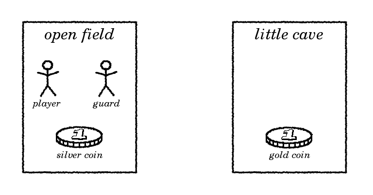

How to program a text adventure in C
by Ruud Helderman
<r.helderman@hccnet.nl>
Licensed under
MIT License
4. Objects
Before we go on,
let me make it perfectly clear I am using the term ‘object’ in a
philosophical sense
here.
It has nothing to do with
object-oriented programming,
nor does it have anything in common with
the ‘Object’ type pre-defined in programming languages like
Java,
C#
and
Python.
Below, I will define a new
data type
named object;
any other name will do equally well if you find object to be confusing,
or if it gives a namespace conflict in the programming environment
you are using.
Very well, moving on...
Most puzzles in adventure games revolve around
items and/or actors.
Examples:
- A key must be found, then used to unlock a certain door.
- A guard must be killed, bribed or lured away to gain access to a room.
Naturally, the guard might as well be a dog, troll, dragon or robot.
In this sense,
non-player character
is a common term, but I don’t want to make a distinction
between player and non-player characters
(the guard might well be another player in a multi-player game).
And just ‘character’ is easily confused with a
character
data type,
so I will stick to ‘actor’.
To represent items and actors, we can use a
struct
like this:
- description:
how the item/actor is described in narrative text output by the program.
- tag:
how the item/actor is recognized by the
parser.
- location:
where the item/actor is located.
This is a pointer to a struct location
as defined in the previous chapter.

| struct object {
const char *description;
const char *tag;
struct location *location;
}
objs[] = {
{"a silver coin", "silver", &locs[0]},
{"a gold coin" , "gold" , &locs[1]},
{"a burly guard", "guard" , &locs[0]}
};
|
Notice this data structure is very similar to the array of locations
we made in the previous chapter.
In fact, the two are so similar we can merge them into a single big list
containing locations, items and actors,
and simply refer to all of them as objects.
| struct object {
const char *description;
const char *tag;
struct object *location;
}
objs[] = {
{"an open field", "field" , NULL},
{"a little cave", "cave" , NULL},
{"a silver coin", "silver", &objs[0]},
{"a gold coin" , "gold" , &objs[1]},
{"a burly guard", "guard" , &objs[0]}
};
|
Now that there is no separation between objects and locations,
the struct object contains a pointer to itself.
This is nothing exceptional in C: a
linked list
works in a similar way, so don’t be alarmed.
To make it easier to reference individual objects,
we will define symbolic names for pointers to each element in the array.
| #define field (objs + 0)
#define cave (objs + 1)
#define silver (objs + 2)
#define gold (objs + 3)
#define guard (objs + 4)
|
Here are a few examples of how to use these pointers.
The first one is an adaption of a code sample from the previous chapter,
displaying the text “You are in an open field.”
| printf("You are in %s.\n", field->description);
|
The following piece of code will
list all items and actors present in the cave.
| struct object *obj;
for (obj = objs; obj < objs + 5; obj++)
{
if (obj->location == cave)
{
printf("%s\n", obj->description);
}
}
|
So what is the benefit of having a single big list of objects?
Our code becomes simpler, as many functions (like the one above)
only need to scan through a single list of objects, rather than three lists.
One might argue that this is irrelevant,
since each command applies to one type of object only:
- Command go applies to locations.
- Command get applies to items.
- Command kill applies to actors.
But this separation is hardly realistic, for three reasons:
- Some commands apply to more than one type of object,
in particular examine.
- Besides, an adventure that responds to “eat guard”
with “You can’t”, is just plain boring.
Verbs should not discriminate on the type of object.
The perfect adventure is one that returns an imaginative response
for every combination of verb and noun within the game’s vocabulary.
- Some objects may have more than one role in the game. Examples:
- A little gnome could be both actor and item;
the player can both speak with the gnome and pick him up.
- A giant could be both actor and location;
this time the giant could pick up the player and walk around with him.
- Aladdin’s
wonderful lamp could be both item and location.
With all objects together in one big list, it is tempting to add some
enum
attribute named ‘type’ to struct object
to help us distinguish between the different types of objects.
However, objects typically have other characteristics that work equally well:
- Locations
are connected by passages (to be introduced in chapter 6).
If an object cannot be reached through a passage, then it is not a location.
It’s that simple.
- Items
are the only objects the player can pick up;
courtesy of their weight (an attribute introduced in chapter 10).
- Actors
are the only objects the player can talk to, trade with, fight with;
provided of course that they are still alive!
A health attribute (introduced in chapter 10)
is both more appropriate and more versatile than a simple type.
There is one more object we will add to the array: the player himself.
In the next chapter, we will see the real benefits of this choice.
For now,
the only difference is in the way the player’s current location is stored.
In the previous chapter,
there was a separate variable locationOfPlayer.
We will drop it,
and use the location attribute of the player object instead.
For example, this statement will move the player into the cave:
And this expression returns
the description of the player’s current location:
| player->location->description
|
Time to put it all together.
We start with a whole new module for the array of objects.
| Sample output |
|---|
Welcome to Little Cave Adventure.
You are in an open field.
You see:
a silver coin
a burly guard
--> go cave
OK.
You are in a little cave.
You see:
a gold coin
--> go field
OK.
You are in an open field.
You see:
a silver coin
a burly guard
--> go field
You can't get much closer than this.
--> look around
You are in an open field.
You see:
a silver coin
a burly guard
--> quit
Bye!
|
| object.h |
- typedef struct object {
- const char *description;
- const char *tag;
- struct object *location;
- } OBJECT;
- extern OBJECT objs[];
- #define field (objs + 0)
- #define cave (objs + 1)
- #define silver (objs + 2)
- #define gold (objs + 3)
- #define guard (objs + 4)
- #define player (objs + 5)
- #define endOfObjs (objs + 6)
|
| object.c |
- #include <stdio.h>
- #include "object.h"
- OBJECT objs[] = {
- {"an open field", "field" , NULL },
- {"a little cave", "cave" , NULL },
- {"a silver coin", "silver" , field },
- {"a gold coin" , "gold" , cave },
- {"a burly guard", "guard" , field },
- {"yourself" , "yourself", field }
- };
|
Note:
to compile this module, the compiler must support
constant folding.
This rules out some of the more primitive compilers like
Z88DK.
Which is a shame, since that particular compiler might otherwise be used
to port our 1980s-style game to a 1980s-style computer.
For most commands (go, to begin with), the following module
is going to help us find the object that matches the noun specified.
| noun.h |
- extern OBJECT *getVisible(const char *intention, const char *noun);
|
| noun.c |
- #include <stdbool.h>
- #include <stdio.h>
- #include <string.h>
- #include "object.h"
- static bool objectHasTag(OBJECT *obj, const char *noun)
- {
- return noun != NULL && *noun != '\0' && strcmp(noun, obj->tag) == 0;
- }
- static OBJECT *getObject(const char *noun)
- {
- OBJECT *obj, *res = NULL;
- for (obj = objs; obj < endOfObjs; obj++)
- {
- if (objectHasTag(obj, noun))
- {
- res = obj;
- }
- }
- return res;
- }
- OBJECT *getVisible(const char *intention, const char *noun)
- {
- OBJECT *obj = getObject(noun);
- if (obj == NULL)
- {
- printf("I don't understand %s.\n", intention);
- }
- else if (!(obj == player ||
- obj == player->location ||
- obj->location == player ||
- obj->location == player->location ||
- obj->location == NULL ||
- obj->location->location == player ||
- obj->location->location == player->location))
- {
- printf("You don't see any %s here.\n", noun);
- obj = NULL;
- }
- return obj;
- }
|
Explanation:
- Line 11-22:
function getObject determines the object that belongs to a given noun.
It returns a pointer to the object with the tag that matches that particular
noun (i.e. for which function objectHasTag returns true).
If no matching tag can be found,
NULL
is returned.
- Line 24-43:
function getVisible is a convenient wrapper around getObject.
It will output a generic message if no object matches the given noun,
or if the matching object is not visible from where the player is standing.
In either case,
NULL
is returned to inform the caller that no further action needs to be taken.
- Line 31-37:
the condition that determines whether a specific object is visible
from the player's point of view, consists of 7 rules.
- Line 31: the player himself. Yes, that is a visible object too.
- Line 32: the player’s current location.
- Line 33: objects the player is holding.
- Line 34: objects present at the player’s current location.
- Line 35: any location the player can go to.
Still pretty crude; will be refined in chapter 6.
- Line 36: objects inside another object held by player.
- Line 37: objects inside another object present at current location.
- Line 39:
I deliberately output noun here, not obj->description;
the latter would give away too much of the game.
For example,
the player might make a lucky guess and type “get gold”
without ever having visited the cave (where the gold coin is located).
Replying with “You don’t see a gold coin here”
is like failing to hide the wires suspending the spaceships in a
sci-fi movie.
Instead, we just echo the noun entered by the player:
“You don’t see any gold here.”
Here is another helper function.
It prints a list of objects (items, actors) present at a specific location.
It is going to be used in function executeLook,
and in the next chapter we will introduce another command that needs it.
| misc.h |
- extern int listObjectsAtLocation(OBJECT *location);
|
| misc.c |
- #include <stdio.h>
- #include "object.h"
- int listObjectsAtLocation(OBJECT *location)
- {
- int count = 0;
- OBJECT *obj;
- for (obj = objs; obj < endOfObjs; obj++)
- {
- if (obj != player && obj->location == location)
- {
- if (count++ == 0)
- {
- printf("You see:\n");
- }
- printf("%s\n", obj->description);
- }
- }
- return count;
- }
|
Explanation:
- Line 10:
object player is excluded from the list;
I don’t think the player needs to hear he is present at his own location.
- Line 12-15:
the list starts with a line “You see:”,
but this is not printed until we know for sure at least one object is found.
- Line 19:
the function returns the number of objects in the list.
In this chapter we will not do anything with that return value,
but in the next we will.
In location.c,
the implementation of commands look around and go
is adjusted to the new data structure.
The old array of locations is removed,
and so is the variable locationOfPlayer.
| location.h |
- extern void executeLook(const char *noun);
- extern void executeGo(const char *noun);
|
| location.c |
- #include <stdio.h>
- #include <string.h>
- #include "object.h"
- #include "misc.h"
- #include "noun.h"
- void executeLook(const char *noun)
- {
- if (noun != NULL && strcmp(noun, "around") == 0)
- {
- printf("You are in %s.\n", player->location->description);
- listObjectsAtLocation(player->location);
- }
- else
- {
- printf("I don't understand what you want to see.\n");
- }
- }
- void executeGo(const char *noun)
- {
- OBJECT *obj = getVisible("where you want to go", noun);
- if (obj == NULL)
- {
- // already handled by getVisible
- }
- else if (obj->location == NULL && obj != player->location)
- {
- printf("OK.\n");
- player->location = obj;
- executeLook("around");
- }
- else
- {
- printf("You can't get much closer than this.\n");
- }
- }
|
Explanation:
- Line 12:
use function listObjectsAtLocation (from misc.c)
to show a list of items and actors present at the current location.
- Line 22:
by using function getVisible (from noun.c),
we have eliminated the loop from function executeGo,
making the code more readable.
The modules main.c and parsexec.c remain unchanged;
you can see them in chapters 2 and 3, respectively.
Again, feel free to experiment by adding more objects to the array
in object.c.
Do not forget to increase endOfObjs in object.h accordingly,
or the additional objects will be ignored.
It is nice to have some items to enrich our virtual environment,
but right now, there is not much we can do with them.
Silver and gold is scattered across the floor, but we cannot even pick it up!
Let’s fix that in the next chapter.
Next chapter: 5. Inventory
{kind=link}